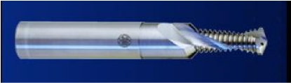

OBJETIVOS
O processo de furação seguido de rosqueamento é muito
empregado na indústria em geral. Visando-se principalmente a redução
de custos de fabricação, foi desenvolvido o processo de furação
e fresamento interno de roscas (Bohrgewinde-fräsen). Este processo emprega
uma única ferramenta, a qual executa a furação, o
escareamento e em seguida o rosqueamento.

Ferramenta
de furação e fresamento interno de roscas.
O metal magnésio tem importância cada vez maior
na indústria, devido principalmente a seu baixo peso - 2/3 do peso
do alumínio.
Este trabalho, em conjunto com o Institut für Produktionstechnik und
Logistik da Universidade de Kassel - Alemanha, tem como objetivo principal
melhorar o desempenho deste tipo de ferramenta na usinagem a seco de magnésio.
Dentre os tópicos a serem analisados pode-se citar o comportamento
das forças, as formas e a evolução do desgaste e a
influência dos parâmetros de entrada do processo (geometria
da ferramenta, velocidade de corte, avanço, profundidade de corte,
penetração de trabalho, etc.).
PROCEDIMENTOS
A adesão de magnésio sobre a ferramenta durante a usinagem
a seco traz alguns de problemas que comprometem a utilização
deste processo de fabricação de roscas. Em geral, ocorre
a quebra prematura da ferramenta devido ao entupimento dos canais da parte
da broca.
O processo de obtenção de informações básicas
sobre a utilização de ferramentas de furação
e fresamento interno de roscas, bem como sobre a usinabilidade de magnésio,
tem como etapa inicial uma revisão bibliográfica sobre o
assunto em publicações especializadas nacionais e internacionais.
Esta pesquisa formará um banco de dados com informações
do estado da arte deste tipo de processo.
Através de ensaios e análise de resultados será possível
identificar as causas dos problemas de quebra de ferramenta, proporcionando
uma atuação direta sobre os problemas e consequentemente
a otimização do processo. Torna-se, assim, viável
a implantação deste processo em escala industrial.
RESULTADOS
Os resultados que são esperados serão úteis para
que este processo de fabricação de roscas se torne mais conhecido
e possa ser empregado com segurança e boa produtividade com maior
fundamento científico.
Espera-se também que esta pesquisa seja o início e a base
de futuros desenvolvimentos na área de furação e rosqueamento,
visando sempre a usinagem ecológica e o desenvolvimento de novas
tecnologias.
Cooperação

Gesamthochschule Kassel - GHK
Institut für Produktionstechnik und Logistik
Prof. Dr.-Ing. Franz Tikal
Kassel - Alemanha
|